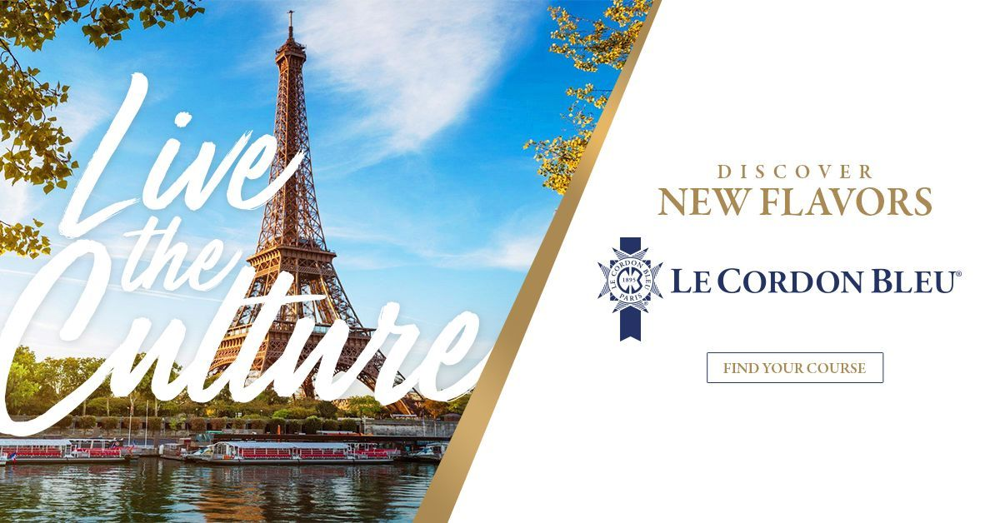
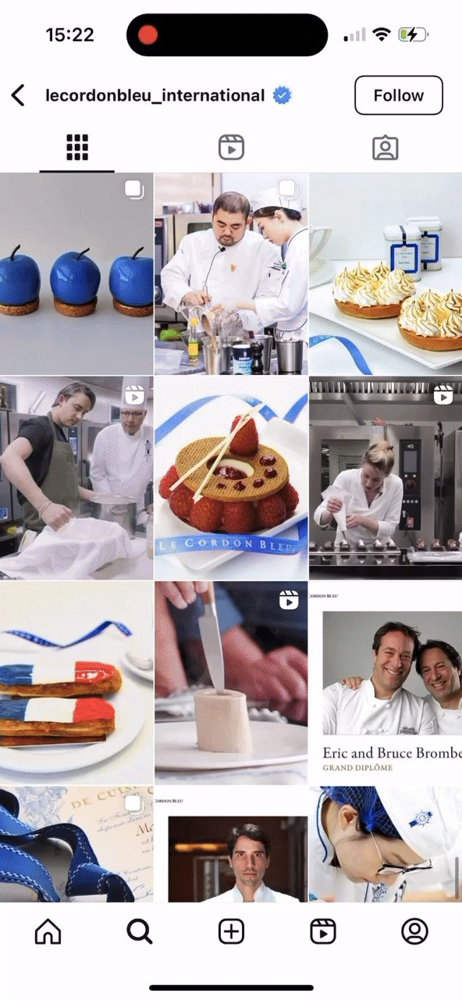

Leading the client relationship for the US-based, US-targeted account under the globally renowned Le Cordon Bleu brand, expanding it from social media management into paid, print, web, and new-market growth, backed by real audience and revenue numbers.
Le Cordon Bleu International's US account needed one steady point of contact who could hold the full picture across paid, organic, print, and web, while still opening the door to new markets.
Stayed hands-on as content strategist, writing and shaping the content itself, while also leading the account end to end as Account Manager and running the proposals that grew it.
Audience growth up to 630% across channels, 700K+ site visitors from paid search, and the account itself grew nearly 76% in scope value.
Le Cordon Bleu International, the US-based, US-market account under the globally renowned, Paris-founded Le Cordon Bleu culinary institute, brought Raxo on in 2017 through a pitch built and led personally, initially to manage the strategy and content for its social media accounts. As the relationship proved out, expectations grew with it. The client needed one person who could hold the full picture, not just execute campaigns, but understand the brand well enough to represent it in every channel, defend the account's value year over year, and spot where the relationship could grow next.
The role was never purely managerial. As Content Strategist, the day-to-day meant building the content strategy itself, tone and voice, messaging, campaign concepts, and the social copy that went out across Facebook, Instagram, and Twitter. As Account Manager, it also meant being the client's main point of contact and leading the proposal decks and business development that expanded the account, working closely with a designer, developer, and analyst to deliver on it. Over the course of the relationship, scope grew from social media management and content creation into:
Over an eight-month stretch alone, Instagram audience grew 434% and Twitter 630%, with Facebook reach passing 1.1 million, growth built directly on the content strategy and copy behind each post, not just the media spend around it. Paid search drove over 719,000 site visitors in a single year, with one banner campaign ("Live the Culture") generating 210,000+ clicks from 13 million impressions. Beyond the metrics, the account itself grew: scope value rose from $8,299 to $14,580 a month heading into 2019, close to a 76% increase, on the strength of the relationship and the results behind it.
A closer look at the actual content strategy, copywriting, and campaign creative behind the results above.
To streamline content creation, a monthly content plan followed four always-on themes: promotion, education, inspiration, and entertainment.
Headlines and messaging across social media, website banners, print ads, Google display ads, and newsletters.
Paid ads and Instagram content from the account's top-performing campaigns, including the actual @lecordonbleu_international grid this work fed into.

